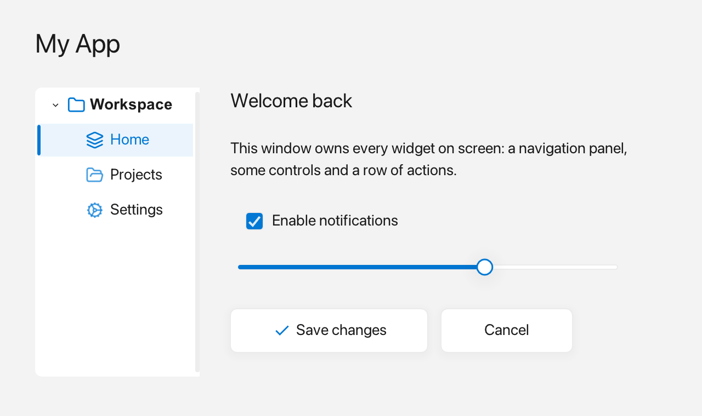

Window
A fluffy::Window is the top-level operating-system window you see on screen; it owns all widgets and runs the event loop.

A window holding a small application layout.
What it's for
Use a Window as the root of every Fluffy app. It creates the native window, holds your widget tree, and pumps the events that keep the interface responsive. You add widgets to it, place them, give them callbacks, and then run it.
A first example
#include <fluffy/fluffy.hpp>
int main() {
fluffy::Window win = fluffy::Window::open("Hello", 640, 400);
if (!win) return 1;
win.run(); // blocks until the window closes
return 0;
}
Window::open takes a title and a size in pixels, and gives you the window. Opening can fail — for example, if the machine has no display — so check if (!win): when the window is usable the condition is false and the program continues, otherwise we return.
open is the convenient path for everyday code. If you need to choose every creation setting, use Window::create(Config) instead. It takes a Config value and returns a Result<Window>: a small box holding either the window or an error message. Check the result before using the value:
auto result = fluffy::Window::create({.title = "My App",
.width = 640,
.height = 400,
.resizable = false});
if (!result) {
std::printf("Could not open window: %s\n", result.error().c_str());
return 1;
}
fluffy::Window& win = result.value();
result.value() gives you the window on success; result.error() gives you the message on failure. If a failure leaves you with nothing sensible to do, result.unwrap() returns the window on success and otherwise prints the error and stops the program — use it only when there is truly no way to continue. In everyday code, prefer open and if (!win).
Common tasks
Create a window and add widgets
fluffy::Window win = fluffy::Window::open("My App", 800, 600);
if (!win) return 1;
auto& label = win.add<fluffy::Label>("Hello, World!");
label.setBounds(fluffy::Rect{40, 40, 200, 32});
auto& btn = win.add<fluffy::Button>("Click me");
btn.setBounds(fluffy::Rect{40, 120, 120, 40});
btn.onClick([] {
std::printf("Clicked!\n");
});
win.run();
Use add<T>() to create a widget attached to the window. It returns a reference to the widget the window now owns, so the reference stays valid while the window is alive and you never delete the widget yourself. Bounds default to Rect{}, so plain add<Label>("Hello") just works and you place it with setBounds:
auto& label = win.add<fluffy::Label>("Hello");
auto& btn = win.add<fluffy::Button>("OK");
auto& input = win.add<fluffy::TextInput>("Type here…");
To adopt an existing widget tree:
auto container = std::make_unique<fluffy::Container>(rect);
fluffy::Widget* raw = win.adopt(std::move(container)); // returns the owned pointer
win.widgetCount() and win.rootWidget(i) let you inspect the roots. For a full-window container with a layout, use a helper instead of manual Rects:
auto& col = win.verticalLayout(); // root Container + VerticalLayout
auto& row = win.horizontalLayout(); // same root, horizontal variant
auto& grid = win.gridLayout(3); // same root, GridLayout with 3 columns
The helpers create the root container on the first call and return it afterwards. Because they share one root, call the one you want first; a later call cannot change the orientation it already has.
Run one window or several
win.run() starts the event loop and blocks until the window closes. Each pass of the loop:
- Reads keyboard/mouse events.
- Updates animations and cursor blink.
- Draws everything.
- Repeats until the window closes.
The loop exits when the user closes the window or when you call win.requestClose(). For a single window this is all you need. If more than one Window exists, win.run() delegates to the application-wide loop, Application::get().run().
For multiple windows, use the static lazy Application:
#include <fluffy/application.hpp>
#include <fluffy/fluffy.hpp>
fluffy::Window w1 = fluffy::Window::open("A", 800, 600);
fluffy::Window w2 = fluffy::Window::open("B", 640, 400);
if (!w1 || !w2) return 1;
w2.setTheme(fluffy::Theme::defaultDark()); // per-window Theme kept
w1.verticalLayout().add<fluffy::Label>("Hello");
fluffy::Application::get().run(); // pumps all windows
// or manual: while(fluffy::Application::get().update(1/60.f)) {}
// update() with no arg computes dt; update(dt) returns bool continue
Every Window registers itself with Application::get() on successful creation or move, and unregisters when it is destroyed. Use Application::get().windowCount() and window(i) to list the windows, Window::isAlive() to know whether one is still alive, and Application::quit() to end the loop. Closing one window hides it, and the loop keeps running while any window is alive. See Application.
Capture a screenshot
win.saveScreenshot("shot.png") writes the window's current framebuffer to a PNG file. It does not draw a frame itself, so render one first:
fluffy::Window win = fluffy::Window::open("My App", 800, 600);
if (!win) return 1;
// Add widgets, then draw the frame you want to capture.
win.renderFrame();
if (!win.saveScreenshot("shot.png")) {
std::fprintf(stderr, "Could not save screenshot\n");
}
The method returns false if the framebuffer is unavailable or the file cannot be written. It also returns false on WebAssembly, where screenshot capture is not supported. PNG encoding is built in through stb_image_write, so no external image library is required.
For off-screen captures, create the window with visible = false, call renderFrame(), then call saveScreenshot(). This is how the documentation screenshots are generated.
Change themes and fonts
You can change the theme at runtime:
win.setTheme(fluffy::Theme::defaultDark());
A Theme bundles the colors, spacing, and fonts the window uses; each window keeps its own. You can register a custom font from memory:
win.registerFontMemory("Inter", ttf_data, ttf_data_size);
fluffy::Theme t = fluffy::Theme::defaultLight();
t.font_family = "Inter";
win.setTheme(t);
Widgets accept four font-spec formats via setFont(), described in the font-spec table in Quick reference. See Theme for colors, fonts, and metrics.
Show dialogs and wire events
Show a modal dialog and get the clicked button:
auto answer = win.showDialog("Confirm", "Are you sure?", {"Yes", "No"});
if (answer == fluffy::Window::DialogChoice::First) {
// proceed
}
Preset button sets and rich Inline labels use the same typed answer (see Dialogs):
auto preset = win.showDialog("Title", "Message", fluffy::Window::DialogButtons::YesNo);
auto custom = win.showDialog("Title", fluffy::Inline{} << "Message",
{fluffy::Inline{} << "OK"});
You can register named handlers and wire them from YAML:
win.dispatcher().registerHandler("save", [](const fluffy::EventArgument&) {
std::printf("Saving…\n");
});
See YAML for how to bind widgets to these handlers.
Control title-bar buttons and use helpers
Disable specific title-bar buttons:
win.setEnabledButtons(fluffy::WindowButtons::Close);
The default is all buttons enabled. Fluffy uses this internally to prevent closing a parent window while a dialog is open.
Other common window operations include moving keyboard focus and loading a UI from YAML:
win.requestFocus(w);
win.clearFocus();
if (!win.load("ui.yaml")) {
// handle failure
}
Good to know
- On WebAssembly there is no second native window:
showDialogfalls back toalert/confirmand returnsDialogChoice::Firstfor 3+ buttons. verticalLayout(),horizontalLayout(), andgridLayout()share one root container: the first call creates it and later calls return it. Pick the orientation you want the first time.- Setting
visibletofalsekeeps the window initially hidden, which is useful for off-screenrenderFrame/saveScreenshotbefore showing. Window::openleaves an object whoserun()does nothing on failure, so always checkif (!win).- In multi-window apps, closing one window hides it and the loop continues while any window is alive.
Quick reference
Config options
| Field | Type | Default | Meaning |
|---|---|---|---|
title |
std::string |
"Fluffy" |
Title bar text |
width |
int |
800 |
Initial width in logical pixels |
height |
int |
600 |
Initial height in logical pixels |
min_width |
int |
0 |
Minimum width (0 = no minimum) |
min_height |
int |
0 |
Minimum height (0 = no minimum) |
resizable |
bool |
true |
User can resize |
vsync |
bool |
true |
Wait for monitor refresh |
visible |
bool |
true |
false = initially hidden (useful for off-screen renderFrame/saveScreenshot before showing) |
decorated |
bool |
true |
false = borderless (custom chrome) |
theme |
Theme |
light theme | Per-window starting colors and fonts |
Font specs
| Spec | Example | Behavior |
|---|---|---|
| Family name | "Inter" |
Resolved via findSystemFont at runtime |
"file:" path |
"file:/path/to/font.ttf" |
Loaded directly from disk |
| Bare file path | "/path/to/font.ttf" |
Auto-detected by .ttf/.ttc/.otf extension |
"mem:" handle |
"mem:body" |
Pre-registered via registerFontMemory, or lazy-loaded from disk on first use |
Useful helpers
win.cursorPosition(x, y)/win.setCursorPosition(x, y)— read or drive the cached mouse position.win.setCursorShape(fluffy::CursorShape::IBeam)— change the cursor (aCursorShapevalue).win.getClipboardString()/win.setClipboardString(...)— clipboard access.win.load("ui.yaml")/win.loadFromString(yaml)— load a UI from a file or string. Both returnNoneResult; check it. See YAML.win.close()/win.requestClose()— exit the main loop.win.setOnResize([](int w, int h) { })— resize callback;win.designSize()— current logical size.win.onKey([](int key, int mods) { return false; })/win.onClose([] { return false; })— simple key/close hooks without rawEventplumbing.win.setEventHandler(h)/win.clearEventHandler()— intercept every event before widgets see it (advanced).win.requestFocus(w)/win.clearFocus()— move keyboard focus.win.showPopup(p)/win.closePopup()/win.closePopupDeferred()/win.hasPopup()/win.popup()— popup overlay stack (menus, tooltips, combo lists).win.saveScreenshot("shot.png")— write the current framebuffer to a PNG; returnsfalseon failure or WebAssembly.win.nativeHandle()—NSWindow*(macOS),HWND(Windows), X11Window, ornullptron WebAssembly. Needed byWebView.win.loadSystemFont("Helvetica")/win.prepareFont(vg, spec, out)/win.nvgContext()— font and NanoVG access.